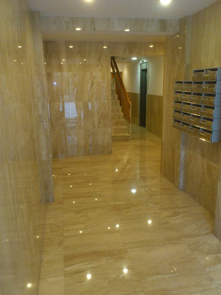
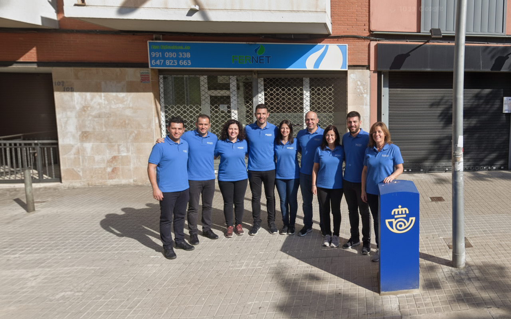
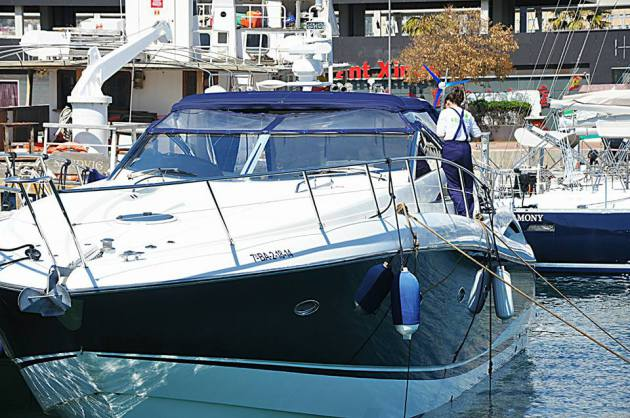
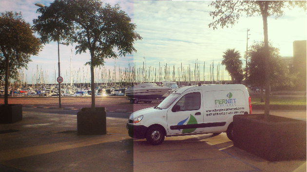
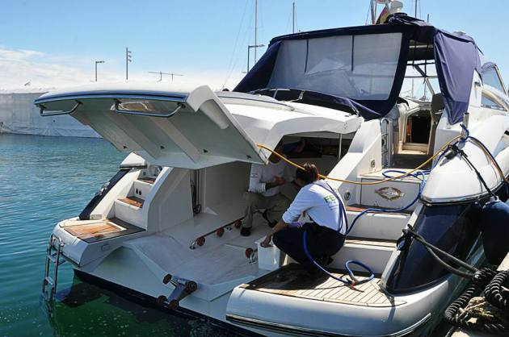
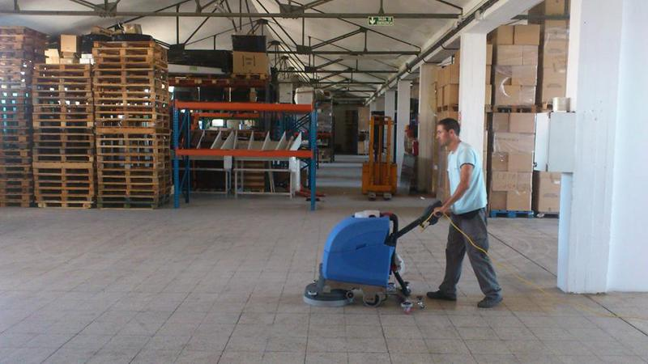
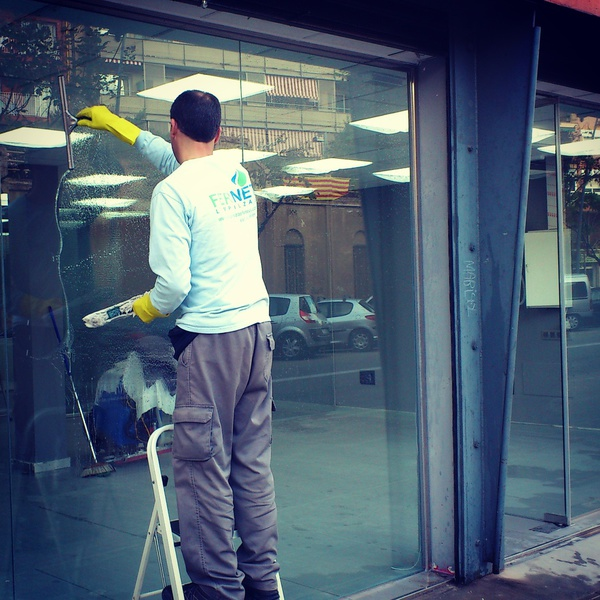
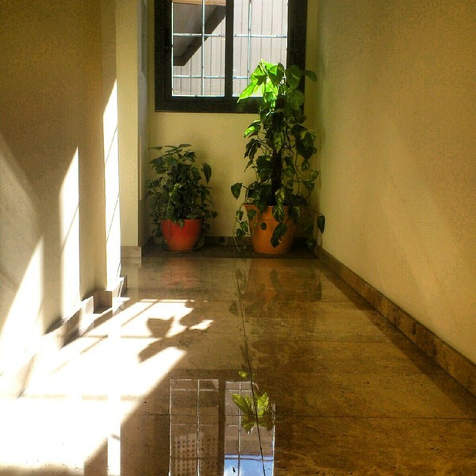

Neteja de Pisos Nous a Gorg, Badalona
Com eliminar la pols fina d'obra, treure la beurada de rajoles i deixar el teu pis recent lliurat a punt per entrar-hi a viure sense esforç.
Llegir article complet →Guies pràctiques i consells tècnics per mantenir impecables la teva llar, comunitat o negoci.

Descobreix com eliminar la pols fina després d'una reforma, mantenir nets els aparadors del teu comerç, organitzar la desinfecció de la teva oficina o protegir la teca del teu vaixell. Guies directes preparades pel nostre equip especialitzat a Badalona.

Com eliminar la pols fina d'obra, treure la beurada de rajoles i deixar el teu pis recent lliurat a punt per entrar-hi a viure sense esforç.
Llegir article complet →
Protocols de neteja per a llocs de treball, pantalles, lavabos i zones comunes. Mantén un entorn laboral saludable i professional.
Llegir article complet →
Planificació de manteniment per a escales, portals, ascensors i garatges. Evita el deteriorament de l'edifici i millora la convivència.
Llegir article complet →
Protecció contra el salnitre en fibra de vidre, teca i interiors nàutics al Port de Badalona. Conserva el valor de la teva embarcació.
Llegir article complet →
Tècniques i productes específics per retirar restes de pintura, guix, silicones i pols acumulada després d'una reforma.
Llegir article complet →
Quan és indispensable una neteja intensiva i com desinfectar cuines, banys, persianes i rincons difícils que el manteniment diari no ateny.
Llegir article complet →
Aparadors cristal·lins, emprovadors higienitzats i terres brillants. Transmet màxima confiança des de la primera ullada a la teva botiga.
Llegir article complet →T'enviem una proposta personalitzada i ajustada a les necessitats del teu espai en menys de 24 hores, sense cap compromís.